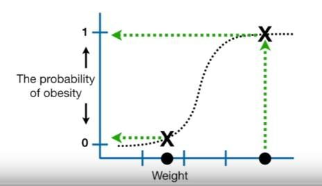
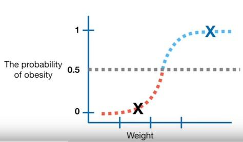

ROC Curve & AUC
- We will talk about the classification models performance evaluation methods:
- Receiver Operating Characteristic(ROC) Curve and
- Area Under the ROC Curve (AUC)
- Classifiers generally don't return a simple “Yes-or-No” answer.
- Mostly, a classification procedure will return a score along a range
- Ideally, the positive instances score towards one end of the scale, and the negative examples towards the other end.
-
It is up to the analyst to set a threshold on that score that separates what is considered a POSITIVE class or a NEGATIVE class.
-
The ROC Curve is a tool that helps to set the best threshold.
- To understand the concept, here is a simple example of Logistic Regression for classification of mice as obese or not obese reagarding their weights.
- X-axis shows the weights
- Y-axis shows the probabilities of the target variable (being obese)

Example is taken from this youtube channel
- We need to turn these probabilities into classification as obese or not obese
- One way to classify the mice is to set a threshold at $0.5$
- The samples with the probability over $0.5$ will be classified as obese and the ones below will be classified as non-obese

-
To evaluate the efectiveness of the Logistic Regression with the classification threshold set to 0.5 we can test it with new samples (mice) that we know obese or not obese
-
The blue ones are actual obese and the red ones are actual not obese

- When we look at the plot we see that
- 1 actual obese(blue) classified as not obese (under the threshold)
- 1 actual not obese(red) classified as obese (over the threshold)
- 3 actual obese and 3 actual not obese classified correctly
- Let's create a confusion matrix from these results

- With these results we can evaluate the performance of this Logistic Regression with the threshold set to $0.5$
-
Sensitivity (Recall)= $0.75$ -
Specifity= $0.75$
-
- What if we set the threshold to $0.1$ in order to be able classify all the actual obese samples as obese

- When we move the threshold from $0.5$ to $0.1$, or visually thinking when we move the threshold bar towards the bottom
- we classify the samples which stay above the bar are as POSITIVE(1) and the ones below the bar as NEGATIVE(0)
- we give more chance to capture all the actual POSITIVE (actual obese) samples but
- some actual NEGATIVEs also stayed over the bar in the positive zone as a result
- we increased the number of TRUE(ly) predicted POSITIVEs and FALSE(ly) predicted as POSITIVEs
- Let's create a confusion matrix from these results

- With these results we can evaluate the performance of the Logistic Regression with the threshold set to
$0.1$
-
Sensitivity (Recall)= $1.00$ -
Specifity= $0.5$
-
- We notice that True Positive Rate (Sensitivity) increased and True Negative Rate (Specifity) decreased
- There is a trade of between True Positive Rate and True Negative Rate
- When we change the threshold generally one of them increases and the other decreases
How can we find the optimal threshold?¶
- We can't compute confusion matrix for all the threshoslds but libraries like Sklearn can bring us the ROC curves
- ROC curves shows the results of all the possible thresholds
Receiver Operating Characteristics (ROC CURVE)¶
-
(Name comes from radar signals Receiver Operating Characteristics)
-
A graph
-
summarizes the performance of a binary classifier (two classes 1 or 0, positive or negative) over all thresholds
-
compares and visualizes the tradeoff between the model’s sensitivity and specificity.
- generated by plotting True Positive Rate (y-axis) against False Positive Rate (x-axis)
-
-
The values (x,y) of each point on the ROC curve changes by the classification threshold used for assigning observations to a given class
-
We cannot compute the ROC curve from a confusion matrix.
- ROC curves have an attractive property: they are insensitive to changes in class distribution.
- If the proportion of positive to negative instances changes in a test set, the ROC curves will not change.
- Any performance metric that uses values from both columns (positive and negative) will be inherently sensitive to class skews.
-
Metrics such as accuracy, precision, lift and F-score use values from both columns of the confusion matrix.
-
As a class distribution changes these measures will change as well, even if the fundamental classifier performance does not.
- ROC graphs are based upon True Positive Rate and False Positive Rate, in which each dimension is a strict columnar ratio, so do not depend on class distributions.
- ROC curves can only be used to assess classifiers that return some confidence score (or a probability) of prediction. - For example, logistic regression, neural networks, and decision trees (and ensemble models based on decision trees) can be assessed using ROC curves.
True Positive Rate= True Positive / All PositivesFalse Positive Rate= False Positive/ All Negatives
- Let's try to answer the question: "How can we find the optimal threshold?" by checking 3 thresholds (points) on the ROC curve below.

(By the way, any ROC curve generated from a finite set of samples is actually a step function, like above, which approaches a true curve as the number of instances approaches infinity)
- Threshold1: At the bottom-left, point $(0,0)$ (The threshold bar is at the top)
- False Positive Rate (FPR):$0$ This is great. The classifier did not make identified any actual Negative sample as Positive
- True Positive Rate (TPR): $0$ This is awful. The classifier could not catch any of the True Positive samples
- Threshold2: At the top-left corner, point $(0.4, 0.8)$
- FPR:$0.4$ Classifier identified some negative samples as positive
- TPR:$0.8$ Classifier showed a good performance on capturing the actual positives
- Threshold3: At the top-right, point $(1.0, 1.0)$ (The thereshold bar is at the bottom)
- FPR:$1.0$ This is awful. Classifier identified all the actual negative samples as positive
- TPR:$1.0$ Classifier showed a good performance on capturing all the actual positives
-
So, the ideal point is therefore the top-left corner of the plot: false positives are close to $0$ and true positives are close $1$.
-
Now, we know how to choose the optimal threshold for a classifier by ROC curve but how can we choose the best performing model with ROC curves?:
- After plotting the ROC curves of some models we inspect
- the top-left corner values on the curves and
- the “steepness” of the curve, as this describes the maximization of the true positive rate while minimizing the false positive rate.

- This leads to another metric, Area Under the Curve (AUC), which is a computation of the relationship between false positives and true positives
Area Under the ROC Curve (AUC)¶
-
To compare the optimal performances of different classifiers we can use the size of the area of each classifiers ROC curves
-
As the picture displays the bigger area under the curve means the model of that curve can classify the actual positive and actual negatives better.
-
Think of the red and green curves(distributions) like this:
- Firstly, they are not ROC curves, ROC curves are on the right side
- We gave a validation dataset to some models and
- models gave us the predict probability of each sample (e.g Sklearn with
predict_proba) - Since we know the labels of them. We assosiated green for the positives and red for the negatives
- We noticed that some models could separate two classes better than other.
- The more overlapping the worse classification performance

How to Interpret AUC?¶

- AUC provides an aggregate measure of performance across all possible classification thresholds.
Let's try to interpret a model's AUC score which has a ROC curve like below:

-
For all the thresholds the values of True Positive Rate (TPR) and the False Positive Rate(FPR) (the proportion of negative examples predicted incorrectly) will be equal on the curve (The diagonal line y=x)
-
In order to get away from this diagonal into the upper triangular region, the classifier must exploit some information in the data.
-
Any classifier that appears in the lower right triangle performs worse than random guessing.
-
This triangle is therefore usually empty in ROC graphs.
-
If we negate a classifier that is, reverse its classification decisions on every instance its true positive classifications become false negative mistakes, and its false positives become true negatives.
-
Therefore, any classifier that produces a point in the lower right triangle can be negated to produce a point in the upper left triangle.
-
Any classifier on the diagonal may be said to have no information about the class.
-
A classifier below the diagonal may be said to have useful information, but it is applying the information incorrectly
- We look for the model performance where True Positive Rate is significantly higher than False Positive Rate.
- This means that our ROC curve should satisfy the condition y > x
- This is the region of upper triangle

Why is AUC a desirable metric?¶
- AUC is scale-invariant.
- It measures how well predictions are ranked, rather than their absolute values.
- AUC is based on the relative predictions, so any transformation of the predictions that preserves the relative ranking has no effect on AUC.
-
AUC is classification-threshold-invariant.
-
It measures the quality of the model's predictions irrespective of what classification threshold is chosen.
-
The amount of spread between predictions does not actually impact AUC. Even a prediction score for a randomly drawn true positive is only a tiny epsilon greater than a randomly drawn negative, that will count that as a success contributing to the overall AUC score.
-
However, both these reasons come with caveats, which may limit the usefulness of AUC in certain use cases:
- Scale invariance is not always desirable.
-
For example, sometimes we really do need well calibrated probability outputs, and AUC won’t tell us about that.
-
Classification-threshold invariance is not always desirable. In cases where there are wide disparities in the cost of false negatives vs. false positives, it may be critical to minimize one type of classification error.
When AUC is not suitable?¶
For example, when doing email spam detection,
- you likely want to prioritize minimizing false positives (even if that results in a significant increase of false negatives).
-
AUC isn't a useful metric for this type of optimization.
-
In practice, if you have a "perfect" classifier with an AUC of 1.0, you should be suspicious, as it likely indicates a bug in your model.
-
For example, you may have overfit to your training data, or the label data may be replicated in one of your features
-
Without an explicit cost of error model (cost of false positives and separate cost of false negatives) you should always be suspicious of a single number summary of a classifier performance (be it accuracy, AUC, F1 or so on).
-
We in fact prefer using both precision and recall. If you insist on a single number: the F1 is a good heuristic measure of classifier quality, as it at least incorporates our operational choice of score threshold into the quality assessment.
-
The ROC curve is useful tool designing a classifier from a scoring function (though I prefer the “double hump graph”), but once you have chosen a threshold the performance of the other classifiers (induced by choosing different thresholds) are irrelevant to assessing the performance of the classifier you have settled on.
Sources:
https://developers.google.com/machine-learning/crash-course/classification/roc-and-auc
https://stackoverflow.com/questions/19984957/scikit-predict-default-threshold
https://www.kaggle.com/kevinarvai/fine-tuning-a-classifier-in-scikit-learn
https://stackoverflow.com/questions/31417487/sklearn-logisticregression-and-changing-the-default-threshold-for-classification?rq=1
https://towardsdatascience.com/fine-tuning-a-classifier-in-scikit-learn-66e048c21e65
Comments